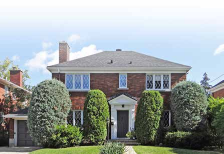

The "King Cottage" Le « King Cottage »

© Ville de Saint-Lambert / Patri-Arch (G. Mongrain, M. Dubois), Répertoire des courants architecturaux, fiche 8

© Ville de Saint-Lambert / Patri-Arch (G. Mongrain, M. Dubois), Répertoire des courants architecturaux, fiche 8
Saint-Lambert's own house: a two-storey brick cottage with several gables, a gabled porch, a little false half-timbering, diamond-leaded casements and dormers half sunk into the eave, built by the hundred by one contractor between the Depression and 1951, and named for him only in the 1980s.
Francis King (1884–1970), a carpenter of Polish origin who came to Montréal in 1906, settled in Saint-Lambert about 1931 and became one of its main builders. Between 1932 and 1951 he put up 70 to 100 houses of various styles chosen from the catalogues then in circulation, from neo-Tudor to postwar bungalows; the brick model "dérivant des cottages anglais" that stands out is what the town now calls the King Cottage. The 2019 study identifies five families of King houses (two-slope roof with Tudor porch; Tudor gable to the street; two-slope classical; hipped classical; bungalow).
| Tenure / plan | single-family |
|---|---|
| Storeys | 2 |
| Roof form | gabled-or-hipped |
| Roof pitch | – |
| Window proportion | vertical |
| Principal cladding | clay-brick |
| Roofing | asphalt-shingle-dark |
| Garage | none |
| Lot width | – |
| Front setback | – |
| Side setback | – |
| Front yard green | – |
What Répertoire des courants architecturaux says about this type
- Very frequent in the Saint-Lambert landscape; built by contractor Francis King between 1932 and 1951 (70 to 100 houses), concentrated in the sectors suited to the middle and upper-middle class (Brooklyn Park and around); the oldest sector south of Victoria has one, his own at 44 rue Argyle.
- Square or rectangular body of two storeys, slightly raised; two-slope or hipped roof; generally detached.
- Several gables; a portal, porch or portico topped by a gable marks the main entrance.
- Corps de logis de plan carré ou rectangulaire de deux étages, légèrement exhaussé du sol avec toit à deux ou à quatre versants (toiture à croupes). La maison est généralement isolée.
- Un portail, un porche ou un portique surmonté d'un pignon marque habituellement l'entrée principale en façade. … Les couleurs pâles pour les matériaux d'accent sont à privilégier.
- Rather sober: decorative woodwork on the portal or porch, false half-timbering in the gables, brick patterns; pale colours for accent materials.
- Les ornements sont plutôt sobres. Des boiseries décoratives ornent le portail ou le porche, de faux colombages décorent les pignons et des jeux de briques forment des motifs.
- Wood doors with or without glazing.
- Wood casements with diamond leading (résilles en losange).
- Gabled dormers often half engaged in roof and wall (pendant dormers).
- Portes en bois avec ou sans vitrage.
- Fenêtres à battants en bois dotées de résilles en losange.
- Lucarnes à pignon souvent à demi engagées dans le toit et le mur, dites lucarnes pendantes.
- Brick.
- Roof: dark asphalt shingle, the original material.
- Pour les murs extérieurs en brique, aucun matériau d'imitation n'est acceptable … Pour le toit, le bardeau d'asphalte de couleur foncée est à privilégier, car il s'agit du matériau d'origine.
- No imitation brick; do not paint masonry; keep brick and mortar sound; industrial claddings proscribed.
- Projections and gables keep their traditional material.
- Steel/PVC doors unsuitable unless perfect imitations of the original; avoid sliding, crank, undivided, aluminium or PVC windows.
- Do not raise foundations or change pitches; enlarge or add a garage at the side or rear, reduced in volume, same roof form, set back; never in front.
Same word elsewhere
- Cottage (Town of Mount Royal)
Same form elsewhere
- –
Same period elsewhere
- Family A company houses (models A1–A8) (Arvida (borough of Jonquière, Saguenay))
- Family B company houses (models B1–B4) (Arvida (borough of Jonquière, Saguenay))
- Family C company houses (models C1–C6) (Arvida (borough of Jonquière, Saguenay))
- Family D company houses (models D1–D5) (Arvida (borough of Jonquière, Saguenay))
- Family M houses (models M1–M11), regionalist neo-vernacular (Arvida (borough of Jonquière, Saguenay))
- Family F semi-detached houses (models F1–F18) (Arvida (borough of Jonquière, Saguenay))
- Families P, Q, S and T (paired and single models along boulevard du Saguenay and rues Powell, Neilson, Berthier, Parks, Joule) (Arvida (borough of Jonquière, Saguenay))
- Family R row houses (models R2–R4) (Arvida (borough of Jonquière, Saguenay))
- Families E, G, H, J, K, L, N, Y and Z (Arvida (borough of Jonquière, Saguenay))
- Wartime Housing Ltd. houses (Arvida (borough of Jonquière, Saguenay))
- English-revival stone house (Hampstead)
- Postwar detached house (Hampstead)
- Garden City House (Town of Mount Royal)
- Faubourg House (Town of Mount Royal)
- Faubourg Apartment Block (Town of Mount Royal)
- Canadian House (Town of Mount Royal)
- New England House (Town of Mount Royal)
- New England Apartment Block (Town of Mount Royal)
- Georgian House (Town of Mount Royal)
- English Manor House (Town of Mount Royal)
- Bungalow (Town of Mount Royal)
- Cottage (Town of Mount Royal)
- Split-Level (Town of Mount Royal)
- Prairie House (Town of Mount Royal)
- Modern Apartment Block (Town of Mount Royal)
- Apartment block without courtyard (Le Plateau-Mont-Royal (borough of Montréal))
- Apartment block with courtyard (Le Plateau-Mont-Royal (borough of Montréal))
- Small apartment building (Le Plateau-Mont-Royal (borough of Montréal))
- Lower-town company house (Ross and Macdonald, 1918–1923) (Témiscaming)
- Upper-district company house (Somerville, 1925–1950) (Témiscaming)
- Tudor Revival house (Westmount)
- Arts and Crafts semi-detached house (Westmount)
- Interwar apartment house (Westmount)
- Modernist residential tower (Westmount)
Same style elsewhere
- Family F semi-detached houses (models F1–F18) (Arvida (borough of Jonquière, Saguenay))
- Families P, Q, S and T (paired and single models along boulevard du Saguenay and rues Powell, Neilson, Berthier, Parks, Joule) (Arvida (borough of Jonquière, Saguenay))
- Family R row houses (models R2–R4) (Arvida (borough of Jonquière, Saguenay))
- Wartime Housing Ltd. houses (Arvida (borough of Jonquière, Saguenay))
- English-revival stone house (Hampstead)
- Postwar detached house (Hampstead)
- Garden City House (Town of Mount Royal)
- English Manor House (Town of Mount Royal)
- Cottage (Town of Mount Royal)
- Lower-town company house (Ross and Macdonald, 1918–1923) (Témiscaming)
- Upper-district company house (Somerville, 1925–1950) (Témiscaming)
- Tudor Revival house (Westmount)
- Interwar apartment house (Westmount)